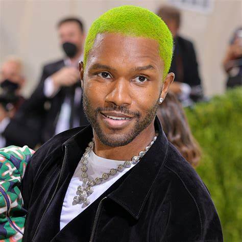

]
Frank Ocean, cujo nome verdadeiro é Christopher Edwin Breaux, é um cantor e compositor americano.
Ele é creditado como um pioneiro do gênero R&B alternativo.
Além de sua carreira musical, Frank Ocean também é um fotógrafo popular
e membro do coletivo.